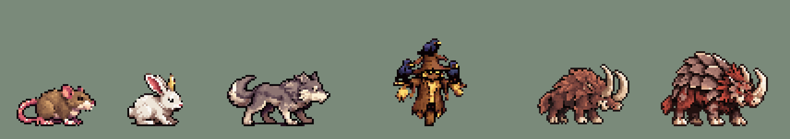
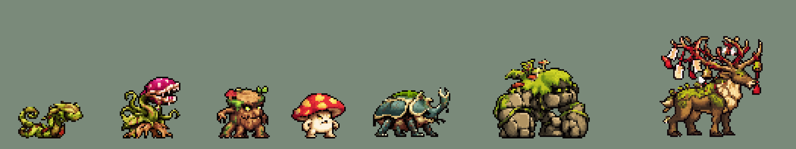
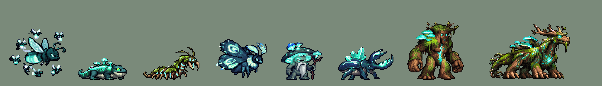
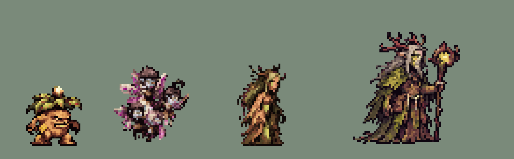

<title>고유 부속품 그림</title>
<meta name="claude:viewport-fit-sides" content="cover">
<link rel="stylesheet" href="https://fonts.googleapis.com/css2?family=Do+Hyeon&family=IBM+Plex+Sans+KR:wght@400;600&display=swap">
<style>
/* 배치: 한 줄 흐름 — 머리 → 순서(번호: 실제 차례) → 붙일 그림 셋(그림 · 크게 보기 · 저장) → 부탁 글 넷(글 · 복사) → 받은 뒤 볼 것.
   색은 궁수 그림에서: 두건 초록 · 가죽 갈색 · 버클 금색. 그림은 밝은 회색 판 그대로 보인다 */
:root {
  --bg: #eeedf4; --surface: #f9f8fc; --panel: #dcd9e8; --fg: #1c1a26; --muted: #5a5770; --line: #c8c4d8;
  --accent: #2f6a3a; --accent-fg: #ffffff; --label: #7a5a0c; --sheet: #c8ccd6; --code: #f3f1f9;
  --font-display: "Do Hyeon", "Apple SD Gothic Neo", "Malgun Gothic", "Noto Sans KR", system-ui, sans-serif;
  --font-body: "IBM Plex Sans KR", "Apple SD Gothic Neo", "Malgun Gothic", "Noto Sans KR", system-ui, sans-serif;
  --font-data: ui-monospace, "SFMono-Regular", Menlo, Consolas, monospace;
}
@media (prefers-color-scheme: dark) { :root:not([data-theme="light"]) { --bg: #16151d; --surface: #1f1d29; --panel: #2e2b3c; --fg: #ebe7f2; --muted: #a39fb4; --line: #383548; --accent: #5ea852; --accent-fg: #ffffff; --label: #f0c45a; --sheet: #c8ccd6; --code: #1b1a24; color-scheme: dark } }
:root[data-theme="dark"] { --bg: #16151d; --surface: #1f1d29; --panel: #2e2b3c; --fg: #ebe7f2; --muted: #a39fb4; --line: #383548; --accent: #5ea852; --accent-fg: #ffffff; --label: #f0c45a; --sheet: #c8ccd6; --code: #1b1a24; color-scheme: dark }
*, *::before, *::after { box-sizing: border-box }
body { background: var(--bg); color: var(--fg); font-family: var(--font-body); font-size: 15px; line-height: 1.6; word-break: keep-all; overflow-wrap: break-word; padding-block: 28px 56px; padding-left: max(16px, env(safe-area-inset-left, 0px)); padding-right: max(16px, env(safe-area-inset-right, 0px)) }
.wrap { max-width: 820px; margin-inline: auto; display: grid; gap: 44px; grid-template-columns: minmax(0, 1fr) }
h1, h2, h3, p, ul, ol, figure, pre { margin: 0 }
ul, ol { padding: 0; list-style: none }
h1, h2 { font-family: var(--font-display); font-weight: 400; text-wrap: balance; line-height: 1.15 }
h1 { font-size: clamp(30px, 7vw, 42px) }
h2 { font-size: 24px }
h3 { font-size: 16px; font-weight: 600 }
.top { display: grid; gap: 10px }
.eyebrow { color: var(--label); font-size: 13px; font-weight: 600; letter-spacing: .04em }
.lede { max-width: 36em }
.sec { display: grid; gap: 18px; grid-template-columns: minmax(0, 1fr) }
.note { color: var(--muted); font-size: 14px; max-width: 44em }
.steps { counter-reset: n; display: grid; gap: 12px; max-width: 46em }
.steps li { counter-increment: n; padding-left: 34px; position: relative }
.steps li::before { content: counter(n); position: absolute; left: 0; top: 1px; width: 24px; height: 24px; display: grid; place-items: center; font: 400 15px/1 var(--font-display); background: var(--accent); color: var(--accent-fg); border-radius: 4px }
.item { display: grid; gap: 10px; grid-template-columns: minmax(0, 1fr) }
.item .what { display: grid; gap: 2px }
.row { display: flex; flex-wrap: wrap; gap: 8px; align-items: center }
.msg { color: var(--muted); font-size: 13px }
.msg:empty { display: none }
.btn { font: 600 14px/1 var(--font-body); padding: 11px 14px; border-radius: 6px; border: 1px solid var(--line); background: var(--surface); color: var(--fg); cursor: pointer }
.btn[aria-pressed="true"] { background: var(--fg); border-color: var(--fg); color: var(--bg) }
.btn.go { background: var(--accent); border-color: var(--accent); color: var(--accent-fg) }
.btn:disabled { opacity: .6; cursor: default }
.btn:focus-visible { outline: 2px solid var(--label); outline-offset: 2px }
.frame { overflow-x: auto; background: var(--sheet); border: 1px solid var(--line); border-radius: 8px }
.frame img { display: block; width: 100%; height: auto; image-rendering: pixelated }
.frame.zoomed img { width: var(--zw); max-width: none }
.frame.soft img { image-rendering: auto }
.attach { color: var(--label); font-size: 13px; font-weight: 600 }
.req { font: 13.5px/1.65 var(--font-body); white-space: pre-wrap; background: var(--code); border: 1px solid var(--line); border-radius: 8px; padding: 14px 16px; max-height: 22em; overflow: auto; -webkit-user-select: text; user-select: text }
.list { display: grid; gap: 10px; max-width: 46em }
.list li { padding-left: 18px; position: relative }
.list li::before { content: ""; position: absolute; left: 2px; top: .62em; width: 6px; height: 6px; background: var(--label) }

.mock { position: relative; width: 100%; aspect-ratio: 2172 / 724; container-type: inline-size; border: 2px solid #000; overflow: hidden; border-radius: 6px; background: #c9d6c2; }
.mock .b { position: absolute; left: 0; right: 0; display: flex; align-items: center; justify-content: center; text-align: center; font-size: 2.9cqw; line-height: 1.25; color: #f2f4e8; box-sizing: border-box; border-top: 1px dashed rgba(0, 0, 0, .45); padding: 0 1cqw; }
.pts { margin: 0; padding-left: 1.2em; display: grid; gap: 4px; }
</style><main class="wrap">
  <header class="top"><p class="eyebrow">미궁도시 라비린토스 · 부속품</p><h1>고유 부속품 그림 부탁</h1><p class="lede">몬스터마다 다른 고유 부속품 서른네 가지를 GPT에서 뽑을 부탁 글 네 개입니다. 지역마다 한 장입니다.</p></header>
  <section class="sec"><div class="what item"><h2>GPT에 붙일 그림 5장</h2><p class="note">①은 화풍 기준, ②는 지역마다 그 지역 몬스터 그림입니다. 부속품의 색과 재질을 몬스터와 맞추려고 붙입니다.</p><p class="note" id="save-hint">저장 단추가 보이지 않으면 그림을 길게 눌러 저장해 주세요.</p></div>
    <div class="item"><div class="what"><h3>① 재료 그림 모음</h3><p class="note">모든 부탁에 붙입니다.</p></div><div class="frame soft" id="f-st"></div><div class="row"><button class="btn" type="button" data-zoom="f-st" aria-pressed="false">크게 보기</button><button class="btn go" type="button" data-save="ref_style.png" hidden>저장</button><span class="msg" role="status"></span></div></div>
    <div class="item"><div class="what"><h3>② 평원 몬스터</h3><p class="note">1번 부탁에 붙입니다. 지금 게임의 몬스터 그림입니다(왼쪽부터 나오는 차례).</p></div><div class="frame" id="f-m0"></div><div class="row"><button class="btn" type="button" data-zoom="f-m0" aria-pressed="false">크게 보기</button><button class="btn go" type="button" data-save="ref_mon_plains.png" hidden>저장</button><span class="msg" role="status"></span></div></div>
    <div class="item"><div class="what"><h3>② 원시림 몬스터</h3><p class="note">2번 부탁에 붙입니다. 지금 게임의 몬스터 그림입니다(왼쪽부터 나오는 차례).</p></div><div class="frame" id="f-m1"></div><div class="row"><button class="btn" type="button" data-zoom="f-m1" aria-pressed="false">크게 보기</button><button class="btn go" type="button" data-save="ref_mon_forest.png" hidden>저장</button><span class="msg" role="status"></span></div></div>
    <div class="item"><div class="what"><h3>② 깊은 숲 몬스터</h3><p class="note">3번 부탁에 붙입니다. 지금 게임의 몬스터 그림입니다(왼쪽부터 나오는 차례).</p></div><div class="frame" id="f-m2"></div><div class="row"><button class="btn" type="button" data-zoom="f-m2" aria-pressed="false">크게 보기</button><button class="btn go" type="button" data-save="ref_mon_deepforest.png" hidden>저장</button><span class="msg" role="status"></span></div></div>
    <div class="item"><div class="what"><h3>② 세계수 뿌리굴 몬스터</h3><p class="note">4번 부탁에 붙입니다. 지금 게임의 몬스터 그림입니다(왼쪽부터 나오는 차례).</p></div><div class="frame" id="f-m3"></div><div class="row"><button class="btn" type="button" data-zoom="f-m3" aria-pressed="false">크게 보기</button><button class="btn go" type="button" data-save="ref_mon_rootcave.png" hidden>저장</button><span class="msg" role="status"></span></div></div>
  </section>
  <section class="sec"><div class="what item"><h2>부탁 글 4개</h2></div><div class="item"><div class="what"><h3>1. 평원 고유 부속품 10개</h3><p class="attach">붙일 그림: ① 재료 그림 모음 + ② 평원 몬스터</p></div><pre class="req" id="req-1" tabindex="0">고유 부속품 그림 — 평원 (10개)

붙인 그림 두 장: ① 재료 그림 모음 — 화풍과 크기의 기준. ② 평원 몬스터 — 색과 재질의 기준.
②의 몬스터들에게서 얻는 「고유 부속품」을 그려 주세요. 몬스터를 쓰러뜨리고 갈무리해 떼어 낸 부위입니다.

그릴 것 (왼쪽 위부터 차례로)
1. 쥐꼬리: 들쥐의 길고 가는 분홍빛 꼬리 한 가닥, 둥글게 말림
2. 뿔토끼 뿔: 뿔토끼 이마의 작은 상아빛 뿔 하나, 밑동에 털 조금
3. 들늑대 가죽: 머리와 꼬리가 달린 잿빛 늑대 털가죽 한 장
4. 들늑대 송곳니: 굽은 흰 송곳니 두 개
5. 허수아비 짚단: 끈으로 묶은 누런 짚 한 단, 해진 천 조각이 끼어 있음
6. 까마귀 깃털: 윤이 나는 검푸른 깃털 두 가닥
7. 멧돼지 가죽: 거친 갈색 털이 붙은 두꺼운 가죽 한 장
8. 멧돼지 엄니: 위로 휜 굵은 누런 엄니 한 쌍
9. 갑옷 멧돼지 등판: 멧돼지 등을 덮던 쇳빛 딱딱한 등판 한 조각(겹친 판 꼴)
10. 들쥐왕의 왕관: 찌그러진 작은 금빛 왕관, 밀 이삭 장식

크기
· 가로 5칸 × 세로 2줄. 가로 : 세로 = 5 : 2 (예: 2000 × 800)

공통 규격
· 도트 그림. 붙인 ① 재료 그림과 같은 느낌: 굵은 어두운 테두리, 또렷한 명암, 비스듬히 위에서 본 각도의 물건 하나씩
· 색과 재질은 붙인 ② 몬스터 그림에서 그 몬스터의 그 부위와 같게 (그 몬스터에게서 떼어 낸 것으로 보여야 한다). 몬스터 전체는 그리지 않는다
· 바탕은 한 가지 색으로만 꽉 채운다: 선명한 자홍색 (#FF00FF). 칸 나눔 줄 · 번호 · 글자 · 그림자 없이
· 물건끼리 닿지 않게 같은 간격으로. 물건마다 크기를 비슷하게
· ①에 적힌 글자와 금빛 틀은 무시하고 왼쪽의 재료 그림만 본다
· 십자 꼴 반짝이는 쓰지 않는다. 다른 작품의 아이콘을 닮지 않게 새로 디자인한다</pre><div class="row"><button class="btn go" type="button" data-copy="req-1">글 복사</button><span class="msg" role="status"></span></div></div><div class="item"><div class="what"><h3>2. 원시림 고유 부속품 12개</h3><p class="attach">붙일 그림: ① 재료 그림 모음 + ② 원시림 몬스터</p></div><pre class="req" id="req-2" tabindex="0">고유 부속품 그림 — 원시림 (12개)

붙인 그림 두 장: ① 재료 그림 모음 — 화풍과 크기의 기준. ② 원시림 몬스터 — 색과 재질의 기준.
②의 몬스터들에게서 얻는 「고유 부속품」을 그려 주세요. 몬스터를 쓰러뜨리고 갈무리해 떼어 낸 부위입니다.

그릴 것 (왼쪽 위부터 차례로)
1. 덩굴 뱀 가시: 덩굴 뱀 몸에 돋았던 초록 가시 서너 개가 붙은 덩굴 토막
2. 식충 꽃 꿀: 꽃잎 조각에 담긴 끈끈한 분홍빛 꿀 한 방울 덩이
3. 나이테 조각: 걷는 그루터기에서 잘라 낸 둥근 나이테 판 한 조각
4. 단단한 나무껍질: 두껍고 거친 갈색 나무껍질 한 조각, 이끼 조금
5. 점박이 갓: ②의 점박이 버섯과 같은 색의 점박이 갓 하나
6. 독버섯 포자: 작은 주머니에 담긴 보랏빛 포자 가루
7. 철갑 등딱지: ②의 풍뎅이와 같은 청록빛 윤이 나는 등딱지 반쪽
8. 풍뎅이 뿔: 끝이 갈라진 풍뎅이 뿔 하나 (②의 풍뎅이 뿔 색)
9. 이끼 골렘의 핵: 이끼에 싸인 돌 속에서 초록빛으로 빛나는 둥근 핵
10. 수호령의 종: 덩굴 끈이 달린 작은 청동빛 종
11. 수호령의 뿔 조각: 잎이 돋은 나뭇가지 꼴 사슴뿔 조각
12. 늙은 트렌트의 심장: 나무 옹이 속에서 호박빛으로 빛나는 심장 꼴 나무 덩이

크기
· 가로 4칸 × 세로 3줄. 가로 : 세로 = 4 : 3 (예: 1600 × 1200)

공통 규격
· 도트 그림. 붙인 ① 재료 그림과 같은 느낌: 굵은 어두운 테두리, 또렷한 명암, 비스듬히 위에서 본 각도의 물건 하나씩
· 색과 재질은 붙인 ② 몬스터 그림에서 그 몬스터의 그 부위와 같게 (그 몬스터에게서 떼어 낸 것으로 보여야 한다). 몬스터 전체는 그리지 않는다
· 바탕은 한 가지 색으로만 꽉 채운다: 선명한 자홍색 (#FF00FF). 칸 나눔 줄 · 번호 · 글자 · 그림자 없이
· 물건끼리 닿지 않게 같은 간격으로. 물건마다 크기를 비슷하게
· ①에 적힌 글자와 금빛 틀은 무시하고 왼쪽의 재료 그림만 본다
· 십자 꼴 반짝이는 쓰지 않는다. 다른 작품의 아이콘을 닮지 않게 새로 디자인한다</pre><div class="row"><button class="btn go" type="button" data-copy="req-2">글 복사</button><span class="msg" role="status"></span></div></div><div class="item"><div class="what"><h3>3. 깊은 숲 고유 부속품 8개</h3><p class="attach">붙일 그림: ① 재료 그림 모음 + ② 깊은 숲 몬스터</p></div><pre class="req" id="req-3" tabindex="0">고유 부속품 그림 — 깊은 숲 (8개)

붙인 그림 두 장: ① 재료 그림 모음 — 화풍과 크기의 기준. ② 깊은 숲 몬스터 — 색과 재질의 기준.
②의 몬스터들에게서 얻는 「고유 부속품」을 그려 주세요. 몬스터를 쓰러뜨리고 갈무리해 떼어 낸 부위입니다.

그릴 것 (왼쪽 위부터 차례로)
1. 에테르 빛가루: 작은 유리병에 담긴 청록빛으로 빛나는 가루
2. 이끼 낀 도마뱀 가죽: 비늘 위에 이끼가 낀 초록 도마뱀 가죽 한 장
3. 뿌리 지네 독니: 끝에 보랏빛 독이 맺힌 굽은 갈색 독니 한 쌍
4. 빛가루 나방 비늘: 빛가루가 묻은 하늘빛 나방 날개 조각
5. 에테르 버섯 갓: 청록빛으로 빛나는 큰 버섯 갓 하나
6. 에테르 수정 조각: 사슴벌레 뿔에서 떼어 낸 청록빛 수정 조각 두세 개
7. 고목의 심재: 짙은 갈색 나무 속심 한 토막, 결이 촘촘함
8. 고룡목의 에테르 심장: 뿌리에 감싸인 채 청록빛으로 크게 빛나는 심장 꼴 수정

크기
· 가로 4칸 × 세로 2줄. 가로 : 세로 = 2 : 1 (예: 1600 × 800)

공통 규격
· 도트 그림. 붙인 ① 재료 그림과 같은 느낌: 굵은 어두운 테두리, 또렷한 명암, 비스듬히 위에서 본 각도의 물건 하나씩
· 색과 재질은 붙인 ② 몬스터 그림에서 그 몬스터의 그 부위와 같게 (그 몬스터에게서 떼어 낸 것으로 보여야 한다). 몬스터 전체는 그리지 않는다
· 바탕은 한 가지 색으로만 꽉 채운다: 선명한 자홍색 (#FF00FF). 칸 나눔 줄 · 번호 · 글자 · 그림자 없이
· 물건끼리 닿지 않게 같은 간격으로. 물건마다 크기를 비슷하게
· ①에 적힌 글자와 금빛 틀은 무시하고 왼쪽의 재료 그림만 본다
· 십자 꼴 반짝이는 쓰지 않는다. 다른 작품의 아이콘을 닮지 않게 새로 디자인한다</pre><div class="row"><button class="btn go" type="button" data-copy="req-3">글 복사</button><span class="msg" role="status"></span></div></div><div class="item"><div class="what"><h3>4. 세계수 뿌리굴 고유 부속품 4개</h3><p class="attach">붙일 그림: ① 재료 그림 모음 + ② 세계수 뿌리굴 몬스터</p></div><pre class="req" id="req-4" tabindex="0">고유 부속품 그림 — 세계수 뿌리굴 (4개)

붙인 그림 두 장: ① 재료 그림 모음 — 화풍과 크기의 기준. ② 세계수 뿌리굴 몬스터 — 색과 재질의 기준.
②의 몬스터들에게서 얻는 「고유 부속품」을 그려 주세요. 몬스터를 쓰러뜨리고 갈무리해 떼어 낸 부위입니다.

그릴 것 (왼쪽 위부터 차례로)
1. 비명 뿌리: 입 벌린 꼴의 옹이가 있는 갈래 진 뿌리 한 토막 (얼굴은 그리지 않는다)
2. 시든 요정 날개: 가장자리가 검게 시든 반투명 요정 날개 한 쌍
3. 검은 수액 눈물: 눈물방울 꼴로 굳은 검보랏빛 수액 덩이
4. 라헨의 썩은 옹이: 지팡이 끝에서 떼어 낸 썩은 나무 옹이, 틈에서 보랏빛이 샌다

크기
· 가로 한 줄 4칸. 가로 : 세로 = 4 : 1 (예: 2000 × 500)

공통 규격
· 도트 그림. 붙인 ① 재료 그림과 같은 느낌: 굵은 어두운 테두리, 또렷한 명암, 비스듬히 위에서 본 각도의 물건 하나씩
· 색과 재질은 붙인 ② 몬스터 그림에서 그 몬스터의 그 부위와 같게 (그 몬스터에게서 떼어 낸 것으로 보여야 한다). 몬스터 전체는 그리지 않는다
· 바탕은 한 가지 색으로만 꽉 채운다: 선명한 자홍색 (#FF00FF). 칸 나눔 줄 · 번호 · 글자 · 그림자 없이
· 물건끼리 닿지 않게 같은 간격으로. 물건마다 크기를 비슷하게
· ①에 적힌 글자와 금빛 틀은 무시하고 왼쪽의 재료 그림만 본다
· 십자 꼴 반짝이는 쓰지 않는다. 다른 작품의 아이콘을 닮지 않게 새로 디자인한다</pre><div class="row"><button class="btn go" type="button" data-copy="req-4">글 복사</button><span class="msg" role="status"></span></div></div></section>
</main>
<script>
const $$ = s => Array.from(document.querySelectorAll(s));
const msgOf = b => b.parentElement.querySelector('.msg');
const W = {"f-st": 710, "f-m0": 2140, "f-m1": 2625, "f-m2": 3320, "f-m3": 1375};
$$('[data-zoom]').forEach(b => { const f = document.getElementById(b.dataset.zoom); f.style.setProperty('--zw', W[b.dataset.zoom] + 'px');
  b.addEventListener('click', () => { const on = f.classList.toggle('zoomed'); b.setAttribute('aria-pressed', on ? 'true' : 'false'); }); });
// 글 복사: 안 되면 글을 골라 둔다
$$('[data-copy]').forEach(b => b.addEventListener('click', async () => {
  const pre = document.getElementById(b.dataset.copy), msg = msgOf(b);
  try { await navigator.clipboard.writeText(pre.textContent); msg.textContent = '복사했습니다.'; }
  catch (_) { const r = document.createRange(); r.selectNodeContents(pre); const s = window.getSelection(); s.removeAllRanges(); s.addRange(r); pre.focus(); msg.textContent = '여기서는 바로 복사가 안 됩니다. 글을 골라 두었으니 길게 눌러 복사해 주세요.'; }
}));
// 저장 (보는 쪽에서 저장을 받아 줄 때만 단추를 보인다)
(async () => {
  let dl = null;
  try { dl = window.claude && window.claude.use ? await window.claude.use('downloads') : null; } catch (_) { dl = null; }
  if (!dl) return;
  document.getElementById('save-hint').hidden = true;
  $$('[data-save]').forEach(b => { b.hidden = false; b.addEventListener('click', async () => {
    const msg = msgOf(b); b.disabled = true; msg.textContent = '';
    try { const blob = await (await fetch(b.dataset.save)).blob(); await dl.save({ filename: b.dataset.save, data: blob }); msg.textContent = '저장했습니다.'; }
    catch (e) { const c = e && e.code; msg.textContent = c === 'declined' ? '저장을 취소했습니다.' : c === 'rate_limited' ? '잠시 뒤에 다시 눌러 주세요.' : '여기서는 저장할 수 없습니다. 그림을 길게 눌러 저장해 주세요.'; }
    b.disabled = false; }); });
})();
</script>